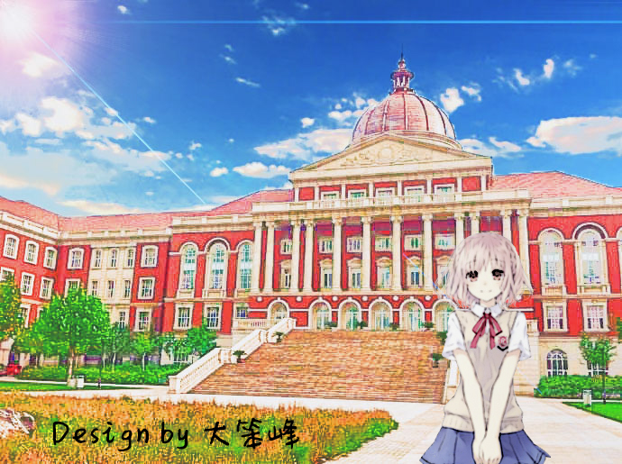

公众号："大笨峰"
我想爱，想吃，还想在一瞬间变成天上半明半暗的云。
我想爱，想吃，还想在一瞬间变成天上半明半暗的云。
那一天我二十一岁，在我一生的黄金时代，我有好多奢望，我想爱，想吃，还想在一瞬间变成天上半明半暗的云，后来我才知道，生活就是个缓慢受锤的过程，人一天天老下去，奢望也一天天消逝，最后变得像挨了锤的牛一样，可是我过二十一岁生日时没有预见到这一点，我觉得自己会永远生猛下去，什么也锤不了我。 ---王小波
最近总在梦中惊醒，内容无一例外是关于爱情以及背叛，醒来总是懊恼又无奈，可惜又可恨，即使自己无法改变什么，又觉得束手无策。
我思来想去，对于“爱情”也参悟不出任何有价值的思想，反正是，处在爱情中的人心理都是被麻醉的，也是被喂了让人上瘾的糖浆，一旦失去或被掠夺被欺骗，就像一不小心扑进深不见底的枯井，深深的失落以及痛苦便落在身上，仿佛突然断了供给的瘾君子，整日漫无目的也没有任何动力，真活像一具行尸走肉。不是丧失了笑的能力，而是任何喜笑的事情都只能让人对接受不了的反差更加痛苦。
我知道，年轻时热烈的喜欢，你付出最多的沉没成本只是你奔涌的多巴胺，也知道，下一次的喜欢不会再羞涩且心乱，就像奔涌的瀑布，变作潺潺的小溪。可是我不知道的是，喜欢到底是有什么依据，不知道我到底喜欢什么样的人，难道真的就是她那个模子一同刻出来的？更不知道的是，多巴胺会不会再猛烈地为下个人分泌，如果不会，是否对于那人有些不公平？
我想起来那条河，是我即将踏入大学校门时，路上的那条，清凉的早晨，太阳泄下闪耀的光辉，波光粼粼的水面如金色斑斓的鳞片，映入我眼中，我眼中也闪耀着光辉，心里充满希望。一如前些时日，我亲眼见到你时，眼里同样闪烁着，只是时过境迁，我再也无法见你，也再不会路过那条河。
所有的失去最痛苦的不是那人的离开，而是你想到看到那些与那人有着密切关系的事物便触景生情，悲从中来，期望越大就失望越大，往日美好的承诺，甜蜜的言语到现在却是划破心脏的刺刀，躲不开也防不住。
关于“失恋”，用我最平常的话说，就是“三月份吸到的第一口冷空气”，没人再听你对于天气的抱怨，对于气温的不满；在你上一次出门吸到冷空气时，那人会告诉你保暖御寒，小心着凉。说是最平常，其实心里已经波涛翻涌，黯然神伤。
二十一年的历练，会有人告诉你怎么去爱一个人，只是那人在让你燃起火焰时便匆匆离去，就像她尝了一口酸石榴，也不等成熟，便扔在地上。
我只愿蓬勃生活在此时此刻，无所谓去哪，无所谓见谁，那些我将要去的地方，都是我从未谋面的故乡，以前是以前，现在是现在，我不能选择怎么生，怎么死；但我能决定怎么爱，怎么活。---王小波
关闭